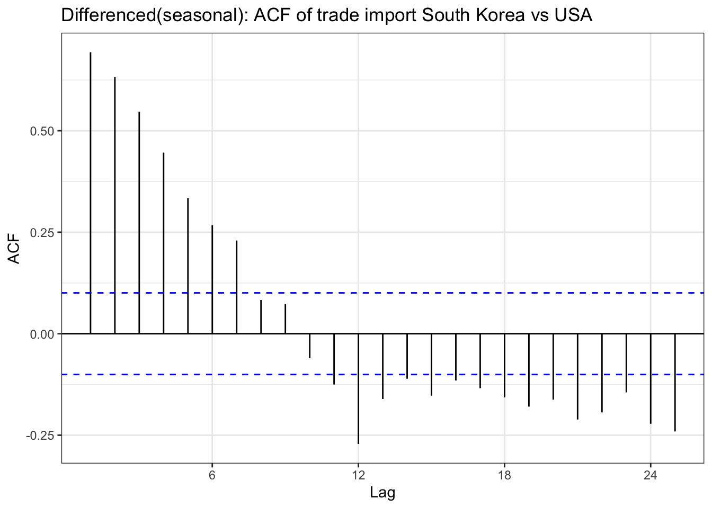
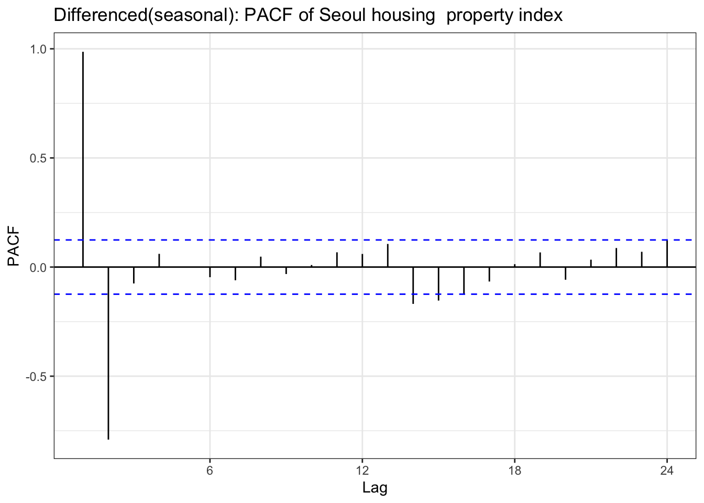

In the EDA part, there is stationary observed from ACF and PACF plot except seoul housing index. Also ADF test(after differencing) confirms this with significant low p-value. To check further specifically seoul housing index, first part of this section is performing second order differencing.
bok_ts <-ts(bok$base_rate, start =c(year(min(bok$Date)), month(min(bok$Date))), end =c(year(max(bok$Date)), month(max(bok$Date))), frequency=4)bok_diff<-diff(bok_ts,differences =2)ggAcf(bok_diff) +geom_segment(aes(xend = lag, yend =0), color="blue") +labs(title ="Differenced(2): ACF of South Korea base rate") +theme_bw()
Code
ggPacf(bok_diff) +geom_segment(aes(xend = lag, yend =0), color="red") +labs(title ="Differenced(2): PACF of South Korea base rate") +theme_bw()
Code
usr_ts <-ts(usr$rate, start =c(year(min(usr$Date)), month(min(usr$Date))), end =c(year(max(usr$Date)), month(max(usr$Date))),frequency=4)usr_diff<-diff(usr_ts,differences =2)ggAcf(usr_diff) +geom_segment(aes(xend = lag, yend =0), color="blue") +labs(title ="Differenced(2): ACF of Federal Reserve Rate ") +theme_bw()
Code
ggPacf(usr_diff) +geom_segment(aes(xend = lag, yend =0), color="red") +labs(title ="Differenced(2): PACF of Federal Reserve Rate ") +theme_bw()
Code
kr_ts<-ts(kr$usd, frequency =252, start =c(year(min(kr$Date)), month(min(kr$Date))), end =c(year(max(kr$Date)), month(max(kr$Date))))kr_diff<-diff(kr_ts,differences =2)ggAcf(kr_diff,lag.max =50) +geom_segment(aes(xend = lag, yend =0), color="blue") +labs(title ="Differenced(2): ACF of KRW/USD FX rate") +theme_bw()
Code
ggPacf(kr_diff,lag.max =50) +geom_segment(aes(xend = lag, yend =0), color="red") +labs(title ="Differenced(2): PACF of KRW/USD FX rate") +theme_bw()
Code
import_ts<-ts(imports$USD, frequency =12, start =c(year(min(imports$Date)), month(min(imports$Date))), end =c(year(max(imports$Date)), month(max(imports$Date))))import_diff <-diff(import_ts,differences =2)ggAcf(import_diff) +geom_segment(aes(xend = lag, yend =0), color="blue") +labs(title ="Differenced(2): ACF of trade import South Korea vs USA") +theme_bw()
Code
ggPacf(import_diff) +geom_segment(aes(xend = lag, yend =0), color="red") +labs(title ="Differenced(2): PACF of trade import South Korea vs USA") +theme_bw()
Code
export_ts<-ts(exports$USD, frequency =12, start =c(year(min(exports$Date)), month(min(exports$Date))), end =c(year(max(exports$Date)), month(max(exports$Date))))export_diff <-diff(export_ts,differences =2)ggAcf(export_diff) +geom_segment(aes(xend = lag, yend =0), color="blue") +labs(title ="Differenced(2): ACF of trade export South Korea vs USA") +theme_bw()
Code
ggPacf(export_diff) +geom_segment(aes(xend = lag, yend =0), color="red") +labs(title ="Differenced(2): PACF of trade export South Korea vs USA") +theme_bw()
Code
yield_3y_ts<-ts(df$US_KR_3Y, frequency =252, start =c(year(min(df$Date)), month(min(df$Date))), end =c(year(max(df$Date)), month(max(df$Date))))yield_3y_ts_diff <-diff(yield_3y_ts,differences =2)ggAcf(yield_3y_ts_diff,lag.max =50) +geom_segment(aes(xend = lag, yend =0), color="blue") +labs(title ="Differenced(2): ACF of USA & South Korea yield spread rate(3Y)") +theme_bw()
Code
ggPacf(yield_3y_ts_diff,lag.max =50) +geom_segment(aes(xend = lag, yend =0), color="red") +labs(title ="Differenced(2): PACF of USA & South Korea yield spread rate(3Y)") +theme_bw()
Code
yield_10y_ts<-ts(df$US_KR_10Y, frequency =252, start =c(year(min(df$Date)), month(min(df$Date))), end =c(year(max(df$Date)), month(max(df$Date))))yield_10y_ts_diff <-diff(yield_10y_ts,differences =2)ggAcf(yield_10y_ts_diff,lag.max =50) +geom_segment(aes(xend = lag, yend =0), color="blue") +labs(title ="Differenced(2): ACF of USA & South Korea yield spread rate(10Y)") +theme_bw()
Code
ggPacf(yield_10y_ts_diff,lag.max =50) +geom_segment(aes(xend = lag, yend =0), color="red") +labs(title ="Differenced(2): PACF of USA & South Korea yield spread rate(10Y)") +theme_bw()
Code
house_ts<-ts(housing$housing, frequency =12, start =c(year(min(housing$Date)), month(min(housing$Date))), end =c(year(max(housing$Date)), month(max(housing$Date))))house_dlog <-diff(house_ts,differences =2)ggAcf(house_dlog) +geom_segment(aes(xend = lag, yend =0), color="blue") +labs(title ="Differenced(2): ACF of Seoul housing property index ") +theme_bw()
Code
ggPacf(house_dlog) +geom_segment(aes(xend = lag, yend =0), color="red") +labs(title ="Differenced(2): PACF of Seoul housing property index ") +theme_bw()
Code
adf.test(house_dlog)
Augmented Dickey-Fuller Test
data: house_dlog
Dickey-Fuller = -7.8107, Lag order = 6, p-value = 0.01
alternative hypothesis: stationary
Code
usd_ts <-ts(usd$usd_index, start =c(year(min(usd$Date)), month(min(usd$Date))), end =c(year(max(usd$Date)), month(max(usd$Date))), frequency =252)usd_log <-log(usd_ts)usd_dlog <-diff(usd_log,diff =2) ggAcf(usd_dlog,lag.max =50) +geom_segment(aes(xend = lag, yend =0), color="blue") +labs(title ="Differenced(2): ACF of USD index") +theme_bw()
In the previous EDA section, we examined ACF & PACF plot before and after differencing. before starting univariate time series analysis, it is important whether differenced result is satisfied for choosing parameter for univariate time series analysis.
Table above is a ACF & PACF plot for differencing, but this time, using second order differencing. In the EDA section, seoul housing index was still suspected non-stationary after first differencing, and in the second differencing,it seems it gives different result. The ACF shows small correlations scattered throughout the lags, with most staying within the confidence bounds. There are some noticeable spikes at lags around 10, 12-13, 16, 18, and 21, but these are relatively modest in magnitude (mostly under 0.15). The overall pattern shows no strong persistence or decay structure. The PACF displays a similar pattern with scattered small spikes, with a notable negative spike at lag 12 (approximately -0.20) and positive spikes at lags 16 and 18. Most other lags remain within the confidence bounds.So second-order differenced series appears to be stationary.
although ADF test result and ACF & PACF plot tells first order differencing(for some variables, log transformation was also done) is enough,except seoul housing index, to make firm decision on parameters, this table has been added. from the plots, it seems that taking second order differencing doesn’t improve significantly for other variables, so for univariate time series, first order differencing will be used for determining model parameters.
Based on the result, next step is to find model selection and its parameter. Table below are the parameters will be used for search algorithm for each data.
Model choices
Model & Parameter selection (USD, KOSPI, and S&P500 are log-transformed before differencing.)
Series
Model parameters
South Korea base rate
ARIMA p = 0,1 d = 1 ,q = 0,1
FED effective rate
ARIMA p = 0,1,2 , d = 0,1 , q = 0,1,2
KRW/USD FX rate
ARIMA p = 0,1 d = 0,1 q = 0,1
Yield spread 3Y (US–KR)
ARIMA p = 0,1 d = 1 q = 0,1
Yield spread 10Y (US–KR)
ARIMA p = 0,1 d = 1 q = 0,1
USD index (log)
ARIMA p = 0,1 d = 1, , q = 0,1
KOSPI index (log)
ARIMA p = 0,1 d = 1,q = 0,1,2
S&P 500 index (log)
ARIMA p = 0,1 d = 0,1, q = 0,1
trade export KOR - USA
SARIMA p = 0,1,d = 0,1 q = 0,1, P = 0,1,2,3 D = 0,1,Q = 0,1 , s= 12
trade import KOR -USA
SARIMA p = 0,1,d = 0,1 q = 0,1, P = 0,1,2 D = 0,1,Q = 0,1, s = 12
Seoul housing property index
SARIMA p =0,1 ,d = 0,1,2 q = 0,1,2 P = 0,1, D = 0,1 ,Q = 0,1,2 ,s = 12
Model selection
ARIMA utility function
Code
library(kableExtra)arima_grid <-function(ts_obj, p_set, d_set, q_set,caption1 =NULL,caption2 ="Comparison of ARIMA Models") { ARIMA_fit <-list() n <-length(p_set) *length(d_set) *length(q_set) results_matrix <-matrix(NA_real_, nrow = n, ncol =6) cc <-1for (d in d_set) {for (p in p_set) {for (q in q_set) { model <-Arima(ts_obj, order =c(p, d, q), include.drift = (d >0)) ARIMA_fit[[cc]] <- model results_matrix[cc, ] <-c(p, d, q, model$aic, model$bic, model$aicc) cc <- cc +1 } } } results_df <-as.data.frame(results_matrix)colnames(results_df) <-c("p","d","q","AIC","BIC","AICc") highlight_row <-which.min(results_df$AIC)cap <-if (!is.null(caption1) &&nzchar(caption1)) {sprintf("%s : %s", caption1, caption2) } else { caption } result_table<-knitr::kable(results_df, align ='c', caption = cap) %>%kable_styling(full_width =FALSE, position ="center") %>%row_spec(highlight_row, bold =TRUE, background ="#FFFF99")list(table = result_table,best_model = ARIMA_fit[[highlight_row]],best_row = results_df[highlight_row, , drop =FALSE] )}
import_diff_seasonal <-diff(import_ts,lag =12)ggAcf(import_diff_seasonal) +geom_segment(aes(xend = lag, yend =0), color="blue") +labs(title ="Differenced(seasonal): ACF of trade import South Korea vs USA") +theme_bw()

Code
ggPacf(import_diff_seasonal) +geom_segment(aes(xend = lag, yend =0), color="red") +labs(title ="Differenced(seasonal): PACF of trade import South Korea vs USA") +theme_bw()
Code
export_diff_seasonal <-diff(export_ts,lag =12)ggAcf(export_diff_seasonal) +geom_segment(aes(xend = lag, yend =0), color="blue") +labs(title ="Differenced(seasonal): ACF of trade export South Korea vs USA") +theme_bw()
Code
ggPacf(export_diff_seasonal) +geom_segment(aes(xend = lag, yend =0), color="red") +labs(title ="Differenced(seasonal): PACF of trade export South Korea vs USA") +theme_bw()
Code
house_diff_seasonal <-diff(house_ts,lag =12)ggAcf(house_diff_seasonal) +geom_segment(aes(xend = lag, yend =0), color="blue") +labs(title ="Differenced(seasonal): ACF of Seoul housing property index ") +theme_bw()
Code
ggPacf(house_diff_seasonal) +geom_segment(aes(xend = lag, yend =0), color="red") +labs(title ="Differenced(seasonal): PACF of Seoul housing property index ") +theme_bw()

SARIMA utility function
Code
library(kableExtra)sarima_grid <-function(ts_obj, p_set, d_set, q_set, P_set, D_set, Q_set, s,caption_prefix =NULL,caption_suffix ="Comparison of SARIMA Model"){ SARIMA_fit <-list() n <-length(p_set) *length(d_set) *length(q_set) *length(P_set) *length(D_set) *length(Q_set) results_matrix <-matrix(NA_real_, nrow = n, ncol =9) cc <-1for (d in d_set) {for (p in p_set) {for (q in q_set) {for (P in P_set) {for (D in D_set) {for (Q in Q_set) { model <-Arima(ts_obj,order =c(p, d, q),seasonal =list(order =c(P, D, Q), period = s),method ="ML", transform.pars =TRUE ) SARIMA_fit[[cc]] <- model results_matrix[cc, ] <-c(p, d, q, P, D, Q, model$aic, model$bic, model$aicc) cc <- cc +1 } } } } } } results_df <-as.data.frame(results_matrix)colnames(results_df) <-c("p","d","q","P","D","Q","AIC","BIC","AICc") highlight_row <-which.min(results_df$AIC) cap <-if (!is.null(caption_prefix) &&nzchar(caption_prefix)) {sprintf("%s : %s", caption_prefix, caption_suffix) } else { caption_suffix } result_table1 <-knitr::kable(results_df, align ='c', caption = cap) %>% kableExtra::kable_styling(full_width =FALSE, position ="center") %>% kableExtra::row_spec(highlight_row, bold =TRUE, background ="#FFFF99")list(table = result_table1,best_model = SARIMA_fit[[highlight_row]],best_row = results_df[highlight_row, , drop =FALSE] )}
fit_import <-sarima_grid(ts_obj = import_ts,p_set =c(0,1), d_set =c(1), q_set =c(0,1,2),P_set =c(0,1), D_set =c(1), Q_set =c(0,1), s =12,caption_prefix ="Trade import South korea vs USA ")fit_import$table
Trade import South korea vs USA : Comparison of SARIMA Model
fit_export<-sarima_grid(ts_obj = export_ts,p_set =c(0), d_set =c(0,1), q_set =c(0,1,2,3),P_set =c(0), D_set =c(0,1), Q_set =c(0,1), s =12,caption_prefix =" Trade export South korea vs USA ")fit_export$table
Trade export South korea vs USA : Comparison of SARIMA Model
The residual diagnostics for the ARIMA(0,1,1) model indicate a fairly good fit. The standardized residuals fluctuate randomly around zero, suggesting the mean of the residuals is stable over time. However there are outlier times for example around 2019 and 2025 Q1. The ACF plot shows no significant spikes beyond the 95% confidence limits, implying that the residuals are uncorrelated and behave like white noise. The Q–Q plot of standardized residuals is mostly linear, though with slight deviations at the tails, indicating mild non-normality. The Ljung–Box test p-values remain above 0.05 across lags, confirming that there is no significant autocorrelation left in the residuals.
The residuals from the ARIMA(1,1,0) model are well-behaved and largely centered around zero, with only a few spikes visible around 2009 and 2020. The ACF plot reveals no substantial autocorrelation at any lag, supporting the conclusion that the residuals are random and independent. The Q–Q plot demonstrates a near-linear relationship between sample and theoretical quantiles, except for small departures at both ends of the distribution, which suggests slight heavy-tailed behavior. The Ljung–Box p-values mostly exceed 0.05, indicating the residuals are effectively white noise. This model performs well and adequately represents the time series dynamics, with minimal room for improvement.
Code
kr_model<-capture.output(sarima(kr_ts, 1,0,1))
For the ARMA(1,0,1) model, the residuals fluctuate around zero but exhibit slightly higher volatility than desired, particularly during certain time intervals. The ACF of the residuals shows weak but visible autocorrelation at the first few lags. The Q–Q plot displays substantial deviation from the 45-degree line in the tails, implying the presence of heavy tails and possible outliers, showing non-linearity. The Ljung–Box test results show a few p-values below the 0.05 threshold, which further indicates some remaining structure in the residuals. In summary, while the model fits decently, it may not fully capture the short-term autocorrelation and could benefit from a slightly more complex specification.
The SARIMA(0,1,2)×(0,1,1)[12] model shows residuals that are roughly centered around zero, though some mild volatility clustering is visible toward the end of the series. The ACF plot exhibits small but notable spikes at seasonal lags. The Q–Q plot suggests that the residuals in heavier tails at the extremes, shows non-linearity. The Ljung–Box test indicates that many p-values are below 0.05, suggesting the presence of lingering autocorrelation, indicating it is not fully capturing underlying structure of time series .
The SARIMA(0,1,1)×(0,1,1)[12] model shows residuals that are roughly centered around zero, though some mild volatility clustering is visible toward the end of the series. The ACF plot exhibits small but notable spikes at seasonal lags. The Q–Q plot suggests that the residuals in heavier tails at the extremes, shows non-linearity. The Ljung–Box test indicates that many p-values are below 0.05, suggesting the presence of lingering autocorrelation, indicating it is not fully capturing the underlying structure of time series .
The ARIMA(0,1,1) model shows residuals that are roughly centered around zero(with one outlier), showing no trend or nonstationarity. The ACF plot is nearly flat, with no significant spikes, suggesting residual independence. The Q–Q plot, however, reveals heavier lower tails, indicating a non-normal distribution. The Ljung–Box test p-values fluctuate around the 0.05 line but mostly remain above it, meaning there is no strong evidence of autocorrelation, it is best to interpret as weak autocorrelation.
The ARIMA(1,0,1) model shows residuals that are roughly centered around zero(with one outlier), showing no trend or nonstationarity. The ACF plot is nearly flat, with no significant spikes, suggesting residual independence. The Q–Q plot, however, reveals heavier lower tails, indicating a non-normal distribution. The Ljung–Box test p-values fluctuate around the 0.05 line but mostly remain above it, meaning there is no strong evidence of autocorrelation, it is best to interpret as weak autocorrelation.
The residual diagnostics for the SARIMA(1,1,2)×(0,1,1)[12] model indicate a strong overall fit. The standardized residuals are well-centered and show no visible trend or heteroskedasticity.However since there are fluctuations, it is possible to suspect the fit of the model. The ACF plot reveals that all autocorrelations fall within the confidence bounds, demonstrating that the residuals are uncorrelated. The Q–Q plot is slight deviations at the tails, close to normal, but non-normal. The Ljung–Box test p-values are all above 0.05, suggesting that there is no evidence of autocorrelation remaining.
Code
usd_model<-capture.output(sarima(usd_log, 1,0,0))
The ARIMA(1,0,0) model produces residuals that fluctuate around zero without clear patterns, indicating good fit of the model. The ACF of the residuals is nearly flat, with no significant spikes, indicating that the model successfully removed most autocorrelation. The Q–Q plot shows heavy tails and slight skewness, implying some non-normality. The Ljung–Box p-values are above 0.05 but close to 0.05, meaning there is weak sign of autocorrelation left in the residuals.
The ARIMA(0,1,2) model demonstrates residuals that are mostly stable and centered around zero, with one outlier spike. The ACF plot indicates that residuals are largely uncorrelated, as no autocorrelation exceeds the 95% bounds. The Q–Q plot reveals noticeable deviations at the extremes, with heavy tails indicating non-normal residuals. Ljung–Box test results suggest that most p-values clearly are above 0.05, confirming no remaining autocorrelation.
Code
sp_model<-capture.output(sarima(sp_log, 0,1, 1))
The residual diagnostics for the ARIMA(0,1,1) model indicate that it fits the data reasonably well. The standardized residuals fluctuate randomly around zero with stable variance, though a few volatility spikes appear around 2008–2010 and after 2020. The ACF of residuals shows no significant autocorrelation, suggesting that the residuals behave like white noise. The Normal Q–Q plot is mostly linear but deviates slightly at the tails, indicating heavier tails and mild non-normality. The Ljung–Box p-values remain above 0.05 in the first few lags and are close to 0.05 or less ,autocorrelation exists in the residuals, suggesting the model has not fully captured the underlying structure of the time series.
discrepancy between model selection process and auto.arima
Both model selection procedure and auto.arima() recommend models, but they weigh evidence differently, so agreement occurs only where the diagnostics are unequivocally clean. For the Federal Reserve rate, trade imports, KOSPI, and S&P 500, residual checks are tidy—flat residual ACFs, Ljung–Box p-values consistently above 0.05, and only mild Q–Q tail bends—so both methods converge on the same specifications. In contrast, several other series show diagnostic red flags that nudge the algorithms apart. The South Korea base rate looks broadly well-fit but exhibits outlier patterns that can distort parameter selection; the FX rate has two large residual outliers and Ljung–Box p-values often below 0.05, indicating unresolved autocorrelation; exports likewise show low Ljung–Box p-values and more volatile residuals than peer models; the 10-year yield spread has one large outlier and Ljung–Box p-values that are acceptable at short lags but approach or fall below 0.05 after roughly 10 lags, again signaling remaining dependence; the Seoul housing index displays notably volatile residuals; and the USD index shows low Ljung–Box p-values, confirming residual autocorrelation. In short, where diagnostics are clean, both methods agree; where outliers, volatility, or lingering autocorrelation appear, auto.arima() tends to prefer more parsimonious, IC-optimal models, while our approach favors specifications that better purge residual structure—hence the differences.
bok_fit <-Arima(bok_ts, order =c(0,1,1))bok_forecast_result <-forecast(bok_fit, h =20)autoplot(bok_forecast_result) +labs(title ="ARIMA(0,1,1) Forecast",x ="Time",y ="Predicted Values") +theme_minimal()
Code
usr_fit <-Arima(usr_ts, order =c(1,1,0))usr_forecast_result <-forecast(usr_fit, h =20)autoplot(usr_forecast_result) +labs(title ="ARIMA(1,1,0) Forecast",x ="Time",y ="Predicted Values") +theme_minimal()
Code
kr_fit <-Arima(kr_ts, order =c(1,0,1))kr_forecast_result <-forecast(kr_fit, h =1008)autoplot(kr_forecast_result) +labs(title ="ARIMA(1,0,1) Forecast",x ="Time",y ="Predicted Values") +theme_minimal()
Code
import_fit <-Arima(import_ts, order =c(0,1,2), seasonal =list(order =c(0,1,1), period =12))import_forecast_result <-forecast(import_fit, h =36,level =c(80, 95))autoplot(import_forecast_result,PI=TRUE) +labs(title =" SARIMA(0,1,2)(0,1,1)[12] Forecast",x ="Time",y ="Predicted Values") +theme_minimal()
Code
export_fit <-Arima(export_ts, order =c(0,1,1), seasonal =list(order =c(0,1,1), period =12))export_forecast_result <-forecast(export_fit, h =36,level =c(80, 95))autoplot(export_forecast_result,PI=TRUE) +labs(title ="Trade export: SARIMA(0,1,1)(0,1,1) Forecast",x ="Time",y ="Predicted Values") +theme_minimal()
Code
yield_3y_fit <-Arima(yield_3y_ts, order =c(0,1,1))yield_3y_forecast_result <-forecast(yield_3y_fit, h =1008)autoplot(yield_3y_forecast_result) +labs(title ="ARIMA(0,1,1) Forecast",x ="Time",y ="Predicted Values") +theme_minimal()
Code
yield_10y_fit <-Arima(yield_10y_ts, order =c(1,0,1))yield_10y_forecast_result <-forecast(yield_10y_fit, h =1008)autoplot(yield_10y_forecast_result) +labs(title ="ARIMA(1,0,1) Forecast",x ="Time",y ="Predicted Values") +theme_minimal()
Code
house_fit <-Arima(house_ts, order =c(1,1,2), seasonal =list(order =c(0,1,1), period =12))house_forecast_result <-forecast(house_fit, h =36,level =c(80, 95))autoplot(house_forecast_result,PI=TRUE) +labs(title ="SARIMA(1,1,2)(0,1,1)[12] Forecast",x ="Time",y ="Predicted Values") +theme_minimal()
Code
usd_fit <-Arima(usd_log, order =c(1,0,0))usd_forecast_result_usd <-forecast(usd_fit, h =1008)autoplot(usd_forecast_result_usd) +labs(title ="ARIMA(1,0,0) Forecast",x ="Time",y ="Predicted Values") +theme_minimal()
Code
kospi_fit <-Arima(kospi_log, order =c(0,1,2))kospi_forecast_result <-forecast(kospi_fit, h =756)autoplot(kospi_forecast_result) +labs(title ="ARIMA(0,1,2) Forecast",x ="Time",y ="Predicted Values") +theme_minimal()
Code
sp_fit <-Arima(sp_log, order =c(1,0,1))sp_forecast_result <-forecast(sp_fit, h =1008)autoplot(sp_forecast_result) +labs(title ="ARIMA(1,0,1) Forecast",x ="Time",y ="Predicted Values") +theme_minimal()
Benchmark
plot utility function
Code
plot_util <-function(forecast_result, ts, h, fit) {print(accuracy(forecast_result)) autoplot(ts) +autolayer(meanf(ts, h = h), series ="Mean", PI =FALSE) +autolayer(naive(ts, h = h), series ="Naïve", PI =FALSE) +autolayer(snaive(ts, h = h), series ="SNaïve", PI =FALSE) +autolayer(rwf(ts, drift =TRUE, h = h), series ="Drift", PI =FALSE) +autolayer(forecast(fit, h = h), series ="Fit", PI =FALSE) +xlab("Date") +ylab("Predicted Values") +guides(colour =guide_legend(title ="Forecast Methods")) +theme_minimal()}